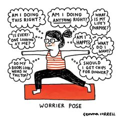

What is Anxiety?
Anxiety is an intense and persistent worry or fear about situations that may occur in a person's everyday life. They cause constant fear and stress which can cause individuals to avoid any work, school, friends, family, and any or all social situations can trigger anxiety symptoms.
Causes and Effects
Some common causes of anxiety can come from any stressful situations such as public speaking or communicating with others. Effects of anxiety include a fast heart rate, quick breathing, sweating, and tiredness.
Some common effects of untreated anxiety include:
- Inability to complete responsibilities in any environment
- Inability to carry out tasks quickly and correctly
- Inability to interact with other individuals
- Troubles sleeping
- Family, friends, and marital problems
Who Does it Affect?
Anxiety disorders affect "about 40 million American adults every year." Anxiety can affect people of all ages, races, genders, and backgrounds. However, there are some races and genders that have higher diagnosis rates of anxiety disorders.
For instance, women are two times more susceptible than men to get an anxiety disorder sometime in their lifetime. Also, women and men are likely to be diagnosed with an anxiety disorder (agoraphobic avoidance, panic disorder, specific phobia, and social anxiety disorder) than men that are diagnosed with another disorder (bulimia nervosa, substance abuse disorder, intermittent explosive disorder, or attention deficit/hyperactivity disorder, also known as ADHD.)
Treatment
Treatments for anxiety include good exercise, a healthy diet, a healthy sleep schedule, and daily physical activities. People struggling with anxiety may also consider seeking medical care through a therapist or doctor.
Doctors recommend five specific types of anxiety treatments:
- Correct breathing techniques. A symptom of anxiety can be caused by hyperventilation, which raises oxygen levels and decreases carbon dioxide levels in the blood. By learning how to breathe from the diaphragm instead of the chest can slow breathing while feeling anxious.
- Cognitive therapy. This treatment focuses on changing patterns of thinking and beliefs that can trigger anxiety. Strategies include "self-talk," reality testing, attention training, and cognitive challenging plus restructuring.
- Behavior therapy. The exposure component of this therapy helps patients consciously face their concerns. It enables people to practice and reevaluate how they react amid crisis and stress.
- Exercise. When the body's "flight-or-fight" response is triggered, it releases adrenaline and other stress chemicals. Exercise burns stress chemicals and promotes relaxation.
- Learning to be assertive. Being assertive helps communicate needs, wants, feelings, beliefs, and opinions to others in a direct and honest form without hurting anyone's feelings. A person with these issues has trouble being assertive because of the fear of conflict or being able to speak up. The major issue that can be resolved would be increasing self-confidence, which then reinforces assertiveness and can help reduce anxiety.